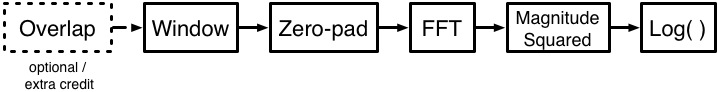

Lab 3 - Spectrogram
Summary
In this lab, you will investigate the effects of windowing, zero-padding, and batch-processing in the frequency domain by way of the Short-Time Fourier Transform (STFT).
Downloads
Python
Philosophical Overview
From this lab onward, Python will primarily be used as a tool to prototype your full system before beginning implementation on Android. It may be tempting to dive into the final implementation immediately, but keep in mind the benefits of a higher-level language:
- Using offline test vectors is significantly easier.
- Common functions are often built-in.
- Testing quick changes does not require recompiling and loading onto the tablet.
- Prototyping your implementation does not require excessive scaffolding code.
All told, iterating in Python is significantly quicker than in Android.
System Description
In this lab, you will implement an online spectrogram comprising the block diagram below. The ability to overlap, while enormously important to constructing a spectrogram that is smooth in time, will require modifying additional Android code and thus is left optional.

Your input signal will be some .wav file of significant enough length to motivate the use of a STFT rather than a single Fourier transform over the entire .wav file. The provided Python test code will simulate the Android buffer architecture by breaking the sample data into blocks determined by the bandwidth of the signal.
Question
Why would you use a STFT over a single-snapshot FFT?
You will first window your input buffer using a Hamming window defined by the following function:
is defined in the provided code as FRAME_SIZE. You will then zero-pad by a factor of two and compute the magnitude of the FFT. Keep in mind that the FFT has both a real and an imaginary component. You should only keep the first half of your FFT output.
Question
What allows us to ignore the second half of our FFT output? Recall the Conjugate Symmetry property of the Fourier Transform.
Finally, you will scale your magnitude output logarithmically. Consider Prelab 2, when the original signal was corrupted with a pure sine tone at 400Hz. The unscaled FFT's dynamic range is large enough that a single dominant frequency bin can overpower the remaining frequency bins when normalizing from 0 to 1. Your STFT output will be mapped to a heatmap scaling between 0 and 1, so you may need to do additional scaling after scaling logarithmically.
Assignment
Implement the system described in the block diagram above for the test code given. For every block of data, your output should be the scaled power spectrum such that values are (primarily) between 0 and 1. This will be evident in the constructed spectrogram. Label the axes of the spectrogram so that X and Y correspond to milliseconds and Hz, respectively.
Send this Python script to your TA in the format lab3_firstname_lastname.py on completion. Grading will be based on the following:
- Did you implement each of the required blocks?
- Does your scaling produce reasonable output?
Some examples of reasonable-looking spectrograms can be found here, here, and here. Extra credit will not be awarded for implementing buffer overlapping in Python, however it is recommended to prototype buffer overlapping in Python to earn the extra credit points for Android.
{kind=link}
{kind=link}
{kind=link}
Python Hints
- Multiplying two NumPy vectors of the same length
c = a * bresults in an element-wise multiplication such thatc[0] = a[0] * b[0]; c[1] = a[1] * b[1], etc. - Python arrays (and NumPy arrays/vectors) can be sliced to only access certain portions. For example, to only write to the second half of an array, you can do the following:
a[len(a)/2:] = b. - The size of a NumPy array (similar to MATLAB's
size()function) is given byyourArray.shape.
Test code
For the next three labs (including this one), we will be giving you Python test code which simulates the Android callflow on some offline test vector. If you are careful not to rely on Python-specific function calls such as np.convolve() or np.lfilter(), converting your code to Android should be a smooth experience.
Example code
# Scaffolding code omitted FRAME_SIZE = 1024 ZP_FACTOR = 2 FFT_SIZE = FRAME_SIZE * ZP_FACTOR ################## YOUR CODE HERE ###################### def ece420ProcessFrame(frame): curFft = np.zeros(FFT_SIZE) return curFft
Android
System Overview
As in Lab 2, you will receive a buffer from the microphone via ece420ProcessFrame(sample_buf *dataBuf) and process your data within the timing window allotted by OpenSL. We have given you the code to convert from byte-packed PCM-16 to int16_t, and we have made the additional decision to work with float instead of int16_t.
Floating Point versus Fixed Point
Fixed point used to be the de facto standard in embedded DSP computing due to readily-available hardware acceleration for fixed point multiplications and additions. Floating point computation was traditionally done in software, meaning that computations would involve multiple CPU cycles rather than a single assembly call.
Any new Android device using the ARMv7 architecture now contains ARM VFP, a floating point coprocessor which handles half, single, and double-precision floating point arithmetic in hardware. The difference between computation time is now negligible and only necessary as a final optimization step if your timing budget is microseconds short.
You can test this claim inside ece420ProcessFrame(). Comment all the code except for the timing code wrapper, and try computing a dummy computation of one hundred thousand float multiply/adds versus int16_t multiply/adds.
We will be using the Kiss FFT library for computing the FFT in Android. The engineering philosophy of KISS stands for "Keep it simple, stupid", and as such, the library only consists of a single source and header file. Importing the library has already been done for you, but you will have to figure out how to use it. There is a helpful README packaged with the library under app/src/main/cpp/kiss_fft.
Something to keep in mind when handling audio data is how long it takes to process your data. Timing is not a problem when dealing with offline test vectors, but on Android, your code is under the power of the operating system. If you take too long while processing a buffer, you may miss the next buffer and cause output audio artifacts or even system crashes.
Exercise
Given a buffer size and a sampling rate , how much time do you have to complete your processing before the next buffer comes in?
Assignment
Implement the system described in the block diagram earlier by filling in the function ece420ProcessFrame() inside cpp/ece420_main.cpp. Your code should closely match your Python implementation. You should write your output to the global variable fftOut so it can be read by the UI-updating thread.
Your demo will consist of speech input and single-tone input at various volumes. You should verify your platform beforehand on a variety of sounds at different volumes.
Buffer Overlap (Extra Credit)
For 1 point of extra credit, implement the buffer overlap portion of the block diagram above in Android. This means computing the FFT over a sliding window of samples instead of mutually-exclusive buffers. You will have to change the OpenSL buffer size in MainActivity.java, along with a few other things, but the total additional code should be no more than 20 lines.
Grading
Your lab will be graded as follows:
- Prelab (2 points)
- Lab (4 points)
- Quiz (2 points)
- Extra Credit (+1 point)